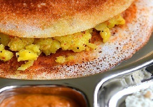

|  | Kerala Masala Dosa Recipe, one of the famous mealtime from South India. However some love to have it for feast or even lunch these eras. Crunchy crumbly dosa is filled with crushed potatoes weathered with zests and served with sambar or chutney. This Masala Dosa recipe, exclusively chutney and sambar. |
Ingredients: Channa dal 3 table spoon,Dry Red chilli (long variety) 7, Garlic 5 flakes, Shallots/ small onion 2, Salt As needed, For the potato masala Potatoes 3, big sized Onion 1 Carrot, finely chopped (optional) 2 table spoon, Green chilli 2, Finely chopped ginger 1 table spoon, Turmeric powder 1/8 table spoon, Salt as per your taste, To temper Oil 1 table spoon, Mustard 3/4 table spoon, urad dal 1 table spoon, Channa dal 2 table spoon, Curry leaves 1 sprig. Method: Wash-down and cut separately potato into 4 pieces and pressure cook with 1/2 cup water for 3 whistles. Skin off the potato and mash it. Heat a pan and place the oil into the pan and also the ingredients, which given in temper with the same order. Let the cashews change in golden, add sliced ginger, green chilli, onion, carrot and fry glowing for a minute, add 1/4 cup water and turmeric, add the mashed potatoes and mix well. Fry for 2-3 minutes, add oil if wanted more. Bake channa dal and red chillies in average flame with few drops of oil, add shallots, garlic laterally with and fry for few minutes, cool down and broadcast to the blender, drudgery it to a deep, yet spreadable chutney, with a little water, heat dosa pan, spread the dosa batter lightly over the hot tawa, once the dosa is half roasted, add a table spoon of this chutney. Range it using the back side of a spoon around the dosa, add butter if you want and spread it equally too as it melts and also you can add oil alternatively, add 4 table spoon of the prepared aloo masala and it’s your choice either to spread it slightly and fold the dosa or keep the masala and roll the dosa. No need to dismissive the dosa. |
||||

Crispy Pizza
Crispy Pizza and Pressed Panini authentic recipe One of the very famous Street Italian food.
Golden Chicken
Crispy and curried Golden chicken recipe for cooking Golden Chicken ghastly.